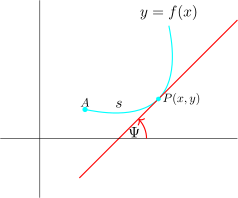

2.19 Intrinsic Coordinates

\(s = \) Length of the curve from \(A\) to \(P\)
\(\Psi = \) the angle which the tangent to the curve at \(P\) makes with the positive \(x -\) axis.
\(s\) and \(\Psi \) are called intrinsic coordinates of \(P\) and the point is written \((s,\Psi )\).
From elementary calculus \(\hspace {0.3cm}\dfrac {dy}{dx} = \tan \Psi \). Thus
\[\frac {d^2y}{dx^2} = \frac {d(\tan \Psi )}{dx} = \sec ^2\Psi \dfrac {d\Psi }{dx}\]
\[\frac {d\Psi }{dx}= \frac {\dfrac {d^2y}{dx^2}}{\sec ^2\Psi }\]
\[\implies \hspace {0.5cm} \frac {dx}{d\Psi } = \frac {\sec ^2 \Psi }{d^2y/dx^2}\]
But \(\hspace {0.3cm}\displaystyle {\frac {dy}{dx} = \tan \Psi = \frac {\sin \Psi }{\cos \Psi }}\hspace {0.4cm}\) Also \(\hspace {0.4cm}\displaystyle {\frac {dy}{dx} = \frac {dy/ds}{dx/ds} =\frac {\sin \Psi }{\cos \Psi }}\)
\[\implies \hspace {0.4cm} \frac {dy}{ds} = \sin \Psi \hspace {0.5cm}\text {and}\hspace {0.5cm} \frac {dx}{ds} = \cos \Psi \]
Write the equation \(y = \cosh x\) in intrinsic coordinates.
\[\dfrac {dy}{dx} = \sinh \hspace {0.4cm} , \hspace {0.4cm} \frac {ds}{dx} = \sqrt {1 + \Big (\dfrac {dy}{dx}\Big )^2}\]
So that \(\hspace {0.3cm}\displaystyle {\frac {ds}{dx} = \sqrt {1 + \sinh ^x}=\sqrt {\cosh ^2x}=\cosh x}\)
\begin {align*} \frac {ds}{dx} =\cosh x \implies s & = \int \frac {ds}{dx}\hspace {0.1cm}dx \\ & = \int \cosh x\hspace {0.1cm}dx \end {align*}
\[\implies \hspace {0.5cm} s(x) = \sinh x + c\]
Particularly, if \(s = 0\) at \(x = 0\), we get \(c = 0\) so that \(s(x) = \sinh x\)
\[s = \sinh x \implies x = \sinh ^{-1}s\]
But \(\hspace {0.5cm} y = \cosh x = \sqrt {1 + \sinh ^2x} = \sqrt {1 + s^2}\)
\(\therefore \hspace {0.4cm} y = \sqrt {1 + s^2}\)
But \(\hspace {0.5cm} \tan \Psi = \dfrac {dy}{dx} = \sinh x\)
\(\implies \hspace {0.5cm} \tan \Psi = s\)
\(\implies \hspace {0.5cm} \Psi = \tan ^{-1}s\)
Curvature in intrinsic coordinates \(\hspace {0.4cm}\displaystyle { K = \frac {d\Psi }{ds} = \frac {1}{1 + s^2}}\)
In Cartesian coordinates \(\hspace {0.4cm}\displaystyle { K = \frac {1}{1 + \sinh ^2x} = \frac {1}{\cosh ^x}}\)
Compare: \begin {align*} K & = \frac {y''}{\Big (1 + (y')^2\Big )^{\dfrac {3}{2}}} = \frac {\cosh x}{\Big (1 + \sinh ^2x\Big )^{\dfrac {3}{2}}}\\\\ & = \frac {\cosh x}{\Big (\cosh ^2x\Big )^{\dfrac {3}{2}}}\\ & = \frac {1}{\cosh ^2x} \end {align*}
Questions on this section
Stuck on something here? Ask below and it stays attached to this topic.